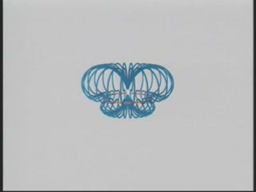
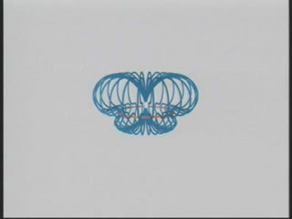

SUBJECT: The Falling Magnet with Finite Resistance Ring
DESCRIPTION: Here we show an example of Faraday's Law, as a magnet is dropped through a conducting ring. As the magnet falls under gravity, a current is induced in the ring that tries to keep the magnetic flux through the area of the ring constant. This corresponds to a field that produces a force that opposes the motion of the magnet: as it approaches from above, the induced current generates a field that pushes the magnet upwards. Once it falls through the ring, the direction of the current changes to produce a field that tries to pull the magnet upwards. Since the resistance of the ring is finite (but small) and the magnet is heavy, the flux through the ring does not stay constant, and the relatively small magnitude of the induced field does not generate a force strong enough to prevent the magnet from falling through.
The first animation shows the magnetic field configuration around a magnet as it falls. The current in the ring is indicated by the small moving spheres. The motions of the field lines are in the direction of the local Poynting flux vector.
The video shows this experiment actually being conducted in real life. In order to make this phenomena easily observable, the copper ring has been cooled in liquid nitrogen to bring down its resistivity.
The third animation shows a three-dimensional fieldline representation of the same thing.
VISUALIZATIONS: 2D (MPG - 6.1 MB); Video (WMV); 3D (WMV - 1.5 MB)